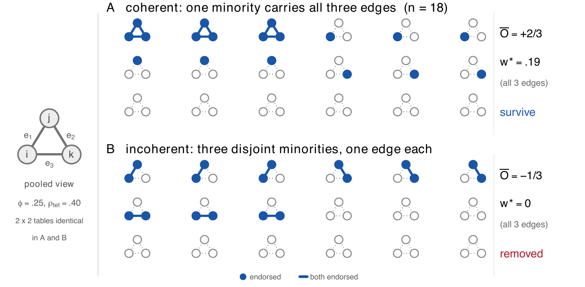

Figure 1 of the preprint claims every number in it can be verified with pencil and paper in a few minutes. This page is that verification — no software, no seeds, nothing hidden.
Eighteen respondents answer three yes/no items \(i, j, k\). Every pair of items is an edge: \(e_1=(i,j)\), \(e_2=(j,k)\), \(e_3=(i,k)\) — one closed triangle. Two scenarios produce the data:
| rows | Scenario A (coherent) | rows | Scenario B (incoherent) | |
|---|---|---|---|---|
| minorities | 1–3 | endorse all three items (M) | 1–3 4–6 7–9 | M₁ endorses {i, j} only M₂ endorses {j, k} only M₃ endorses {i, k} only |
| singletons | 4–6 7–9 10–12 | i only j only k only |
— | — |
| background | 13–18 | endorse nothing | 10–18 | endorse nothing |

Pick any edge — say \(e_1=(i,j)\) — and any scenario, and count the four cells.
Scenario A: who endorses both \(i\) and \(j\)? Only M (3 people). Who endorses \(i\) alone? The i-singletons (3). \(j\) alone? The j-singletons (3). Neither? The k-singletons and the background: \(3+6=9\).
Scenario B: both \(i\) and \(j\)? Only M₁ (3). \(i\) alone? M₃ (3, since they endorse \(i,k\) but not \(j\)). \(j\) alone? M₂ (3). Neither? \(9\).
| j = 1 | j = 0 | |
|---|---|---|
| i = 1 | 3 | 3 |
| i = 0 | 3 | 9 |
The same four cells appear for every edge, in both scenarios — six identical tables. Any statistic computed from this table (or from the marginals \(6/18 = 1/3\)) is therefore identical across all six edge–scenario combinations. This is an arithmetic identity, not an approximation.
The φ coefficient is just Pearson's correlation applied to 0/1 data, and it has a closed form in the cell counts \(n_{11}=3,\; n_{10}=3,\; n_{01}=3,\; n_{00}=9\):
\[ \phi \;=\; \frac{n_{11}n_{00}-n_{10}n_{01}} {\sqrt{n_{1\cdot}\,n_{0\cdot}\,n_{\cdot 1}\,n_{\cdot 0}}} \;=\; \frac{3\cdot 9-3\cdot 3}{\sqrt{6\cdot 12\cdot 6\cdot 12}} \;=\; \frac{27-9}{72} \;=\; \frac{18}{72} \;=\; .25 \]Sanity check: under independence the expected \((1,1)\) count is \(18\times\frac13\times\frac13=2\); we observe \(3\). The association is real but modest.
The tetrachoric correlation answers a different question: if each yes/no answer were a dichotomized continuous trait — two latent standard-normal variables \(Z_i, Z_j\), each cut at a threshold — what correlation \(\rho\) between them would reproduce this table?
The marginals fix the thresholds: each item is endorsed by \(1/3\) of the sample, so
\[ \tau \;=\; \Phi^{-1}\!\left(\tfrac{2}{3}\right) \;=\; 0.431 . \]Then \(\rho\) is chosen so that the bivariate-normal mass above both thresholds matches the observed \((1,1)\) proportion:
\[ \Pr\!\left(Z_i > \tau,\; Z_j > \tau \;\middle|\; \rho\right) \;=\; \frac{3}{18} \;=\; \frac16 . \]This equation has no closed form — a computer solves it numerically and finds \(\rho = .3967\). But there is a classical pencil-and-paper approximation (Pearson's cosine formula) that gets remarkably close:
\[ \rho \;\approx\; \cos\!\left(\frac{\pi}{1+\sqrt{n_{11}n_{00}/(n_{10}n_{01})}}\right) \;=\; \cos\!\left(\frac{\pi}{1+\sqrt{27/9}}\right) \;=\; \cos\!\left(\frac{\pi}{1+\sqrt3}\right) \;=\; \cos(65.9^\circ) \;\approx\; .41 . \]Every correlation is built from centered values — each observation minus its item mean. Each item's mean (endorsement rate) is \(6/18=1/3\), so:
\[ \text{endorse: } 1-\tfrac13=+\tfrac23 \qquad\qquad \text{not: } 0-\tfrac13=-\tfrac13 \]Centering is what gives signs their meaning. A respondent on the same side of the mean on both items — cells \((1,1)\) or \((0,0)\) — contributes positively to their covariance; a respondent on opposite sides contributes negatively. Without centering, \(0\times 0 = 0\) and the "neither" respondents would vanish from the arithmetic entirely.
The matrix \(S\) is the ledger of who carries each edge. For edge \(e=(i,j)\) and respondent \(r\), the entry is the product of the two centered scores:
\[ S_{re} \;=\; (x_{ri}-\bar{x}_i)(x_{rj}-\bar{x}_j) \;\in\;\left\{\tfrac{2}{3}\cdot\tfrac{2}{3},\;\; \tfrac{2}{3}\cdot\!\left(-\tfrac13\right),\;\; \left(-\tfrac13\right)\!\cdot\!\left(-\tfrac13\right)\right\} =\left\{\tfrac49,\; -\tfrac29,\; \tfrac19\right\} \]Multiplying everything by 9 turns \(S\) into small integers. Row groups (each group is 3 or 6 identical rows):
| Scenario A × 9 | Scenario B × 9 | |||||||
|---|---|---|---|---|---|---|---|---|
| rows | e₁(i,j) | e₂(j,k) | e₃(i,k) | rows | e₁(i,j) | e₂(j,k) | e₃(i,k) | |
| M 1–3 | 4 | 4 | 4 | M₁ 1–3 | 4 | −2 | −2 | |
| i 4–6 | −2 | 1 | −2 | M₂ 4–6 | −2 | 4 | −2 | |
| j 7–9 | −2 | −2 | 1 | M₃ 7–9 | −2 | −2 | 4 | |
| k 10–12 | 1 | −2 | −2 | bg 10–18 | 1 | 1 | 1 | |
| bg 13–18 | 1 | 1 | 1 | |||||
One identity worth pausing on: the column mean of \(S_{\cdot e}\) is exactly the covariance of the edge's two items. The pooled correlation collapses each column to that single mean; the carrier-weighted method keeps the whole column — the edge's fingerprint across the eighteen respondents — and asks whether two edges' fingerprints come from the same people.
The fingerprint comparison is a plain cosine between two columns of \(S\). Working in units of \(\tfrac{1}{81}\) (so we can use the ×9 integers), take \(e_1\cdot e_2\) in scenario A:
| row group | product | × count | subtotal |
|---|---|---|---|
| M 1–3 | 4 × 4 | × 3 | +48 |
| i 4–6 | −2 × 1 | × 3 | −6 |
| j 7–9 | −2 × −2 | × 3 | +12 |
| k 10–12 | 1 × −2 | × 3 | −6 |
| bg 13–18 | 1 × 1 | × 6 | +6 |
| dot product | 54 | ||
Each column's squared norm is \(16\cdot3+4\cdot3+4\cdot3+1\cdot3+1\cdot6=81\), so
\[ \cos_A(e_1,e_2) \;=\; \frac{54}{\sqrt{81}\sqrt{81}} \;=\; \frac{54}{81} \;=\; +\frac23 . \]Scenario B, same computation: M₁ rows give \(4\times(-2)\times3=-24\), M₂ rows \((-2)\times 4\times3=-24\), M₃ rows \((-2)\times(-2)\times3=+12\), background \(1\times1\times9=+9\); total \(-27\):
\[ \cos_B(e_1,e_2) \;=\; \frac{-27}{81} \;=\; -\frac13 . \]By the symmetry of the construction, all three edge pairs give the same value within each scenario.
For each edge, \(\bar{O}_e\) is the mean cosine with its node-sharing neighbours. In a triangle every edge has exactly two neighbours, and all cosines are equal, so the mean changes nothing:
\[ \bar{O}^{A} = +\tfrac23 \quad\text{(every edge)} \qquad\qquad \bar{O}^{B} = -\tfrac13 \quad\text{(every edge)} \]The sign is the whole story: in A, neighbouring edges are carried by the same people (the fingerprints align); in B, each edge's carriers are exactly the people who fail to carry the neighbouring edges (the fingerprints oppose).
The Gini coefficient — the same one used for income inequality — measures how unequally the magnitudes \(|S_{re}|\) are spread across respondents. Sort the eighteen values ascending: nine of \(\tfrac19\), six of \(\tfrac29\), three of \(\tfrac49\). With ranks \(r = 1,\dots,18\):
\[ G \;=\; \frac{2\sum_r r\,v_r}{n\sum_r v_r}-\frac{n+1}{n} \;=\; \frac{2\cdot\frac{399}{9}}{18\cdot\frac{33}{9}}-\frac{19}{18} \;=\; \frac{266}{198}-\frac{209}{198} \;=\; \frac{57}{198} \;=\; \frac{19}{66} \;=\; .2879 \]so \(1-G = \frac{47}{66} = .7121\). The top three respondents (17% of the sample) hold \(12/33 \approx 36\%\) of the total contribution — a modest concentration, hence the modest value.
The tension becomes concrete if you hold the three carriers of scenario A fixed and grow only the all-zero background — every value below is an exact pencil computation from the same construction:
| carriers | \(\rho_{\mathrm{tet}}\) | Ō | \(1-G\) | w* (CW-full) | \(|\rho|\max(\bar{O},0)\) |
|---|---|---|---|---|---|
| 3/18 (16.7%) | .397 | +.667 | .712 | .188 | .265 |
| 3/36 (8.3%) | .651 | +.947 | .379 | .234 | .617 |
| 3/60 (5.0%) | .737 | +.985 | .234 | .170 | .726 |
| 3/120 (2.5%) | .804 | +.997 | .121 | .097 | .802 |
Both evidence terms strengthen monotonically as the coherent minority gets rarer, yet the CW-full weight is lowest exactly where the evidence is strongest — the \((1-G)\) collapse outruns both evidence terms, and \(w^*\to 0\) in the rare-syndrome limit the method was built to detect. The last column shows the Gini-free product, which is monotone in the evidence. Whether that variant (or a credibility-weighted one) should replace the locked formula is a question for the next preregistration.
The locked estimator multiplies the three ingredients:
\[ w^{*}_e \;=\; |\rho_e|\,(1-G_e)\,\max(\bar{O}_e,\,0) \]The first two factors are literally identical in A and B — they are functions of the pooled table, and the pooled tables are the same. Survival is decided entirely by the coherence gate.
Every pooled pairwise quantity — φ, the tetrachoric, the Gini, the marginals, and any function of them, including triadic closure across the three edges — is identical between the two scenarios. Yet in A the triangle is one coherent community carried by one minority, and in B it is three accidental fragments that no single respondent connects. The eighteen carrier profiles distinguish the scenarios; no pooled statistic can.
The honest caveat: the full three-way \(2\times2\times2\) table does differ — A has three respondents in the \((1,1,1)\) cell, B has none. The claim is identity at the pairwise level, which is the level at which correlation networks are built. The estimator recovers exactly that respondent-level information from pairwise objects, without ever forming the higher-order table.